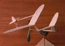
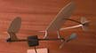

(click either image for larger views)
|  | One afternoon while flying with the Marin Aero Club, George Benson gave me a copy of a wonderful plan from England. Appropriately named the Flying Wishbone, it had been published in Aeromodeller in 1942. The model is an all sheet canard pusher design, with a flat plate airfoil and boom mounted cruciform tail surfaces. With a moment's glance at this whimsical machine, I knew I had to have one. |  |
|
Only much later did I find out about the scandal! It seems that E.H. Clark, the designer credited on the plans, was likely not quite so honest. Shortly after publishing the plans, there arrived at the Aeromodeller offices a letter from Mr. H. Wells, the Honorable Secretary of the Boston Flying Modeling Club. Enclosed were pages from the April 1939 issue of Mechanix Illustrated in which "the Flying Wishbone" was fully described, as designed by Alan Orthof. Comparison of the plans left little doubt that Mr. Clark had but traced the American drawings. Aeromodeller published a correction and apologies in February 1943, and payment to Mr. Clark was withheld. Whether or not a cheque was posted to Orthof is unknown. Like most all wood designs, it went together very quickly, with little troubles. One optional item shown on the plans is definitely worthwhile. The arcing tail booms can either be glued to the top of the wings, or inserted into slots cut into the wings. I choose the latter, and only glued the booms to the inside part of the slot. This allows the tips to be adjusted as if they were ailerons. In an effort to save a little time carving a prop, my version is powered with plastic. This was not quite so easy, as the molded freewheeling ratchet had to be cleaned off the front of the prop, and another cut on the rear. I used a small glass bead as a bearing, and bent a prop hanger from a scrap of aluminium. Power is a loop of 1/8". The bluish blob on the front is the ubiquitous hunk of clay, in this case laced with a few pieces of lead shot to reduce size slightly. Flight characteristics are interesting to say the least. When launched with the proper angle of bank, the Flying Wishbone will circle tightly to the left, gradually opening up slightly, and climbing slightly as the torque tails off. When the proper bank angle is not achieved at release, the craft will climb steeply, looping and twisting, cavorting amongst the clouds, until the power runs out. The angle of the canard is very effective with what is likely a bit of extra power. |
copyright 1998, Thayer Syme. All rights reserved